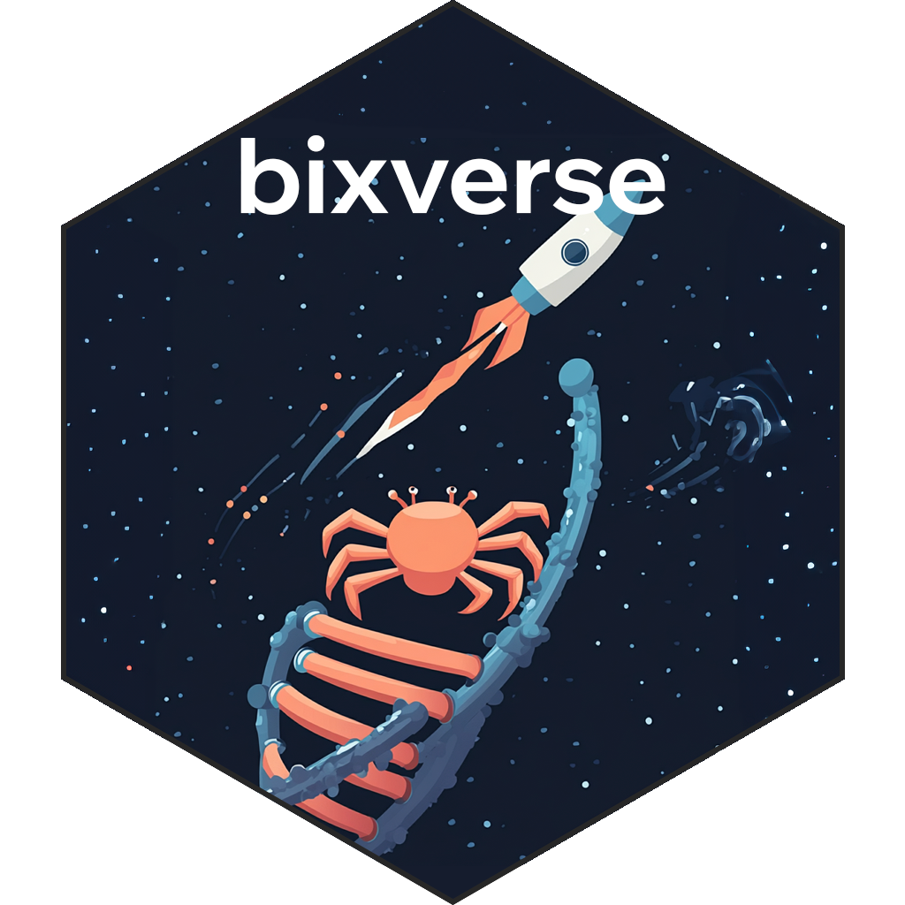
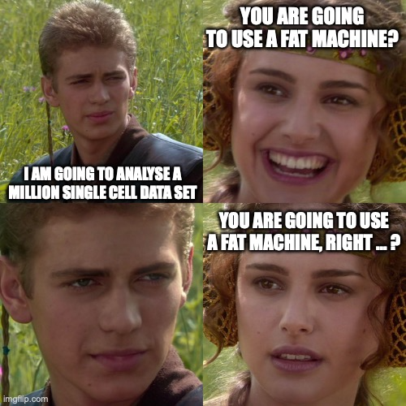

Intro
Description
This is an opionated package taking various bioinformatics and computational biology workflows from R and Python, making them substantially faster via low-level implementations in Rust and exposing them via thin R wrappers. Result? Blazingly fast performance with low memory usage, making large-scale analysis feasable without any cloud compute. Over time more and more methods will be added.
Two sister packages are also in the process of being built and maintained:
- bixverse.plots package for - you guessed it - plotting. Contains especially a large number of plotting helpers for single cell now.
- bixverse.gpu package for - you guessed it again - GPU-accelerated methods. In this case, it leverages cubecl/Burn under the hood with wgpu backends which means it will work on (theoretically) any GPU.
Additional packages that might be of interest interest to you:
- manifoldsR. This package specialises on methods for manifold learning for visualisations, think UMAP, tSNE, diffusion maps, etc. Additionally, it is home to a cool clustering method called EVoC leveraging Rust under the hood. This package is used for all of the 2D visualisations for the single cell suite.
- genewalkR. This one is a bit more graph-heavy but has some cool methods in there… Also, it provides a data base with different gene <> gene interaction and regulatory networks. For sure useful for different computational biology workflows.
Release notes

Major release with "0.4.0". The single cell suite has been further improved. The key changes are:
- Performance improvements across several axes. A lot of the underlying Rust code was made even faster and more performant. The goal of analysing a 1m single cell data set on a MacBook Air with 24 GB memory has been achieved.
- Multi-modal support. There is now a
SingleCellsMultiModalclass that allows you to (for now only) also add ADT counts. Some readers have been added to load in the data. This also includes support for new methods in this space:- DSB normalisation for ADT counts
- WNN generation for generation of multi-modal graphs.
- Large number of methods and updates to support multi-model analysis
- Massive improvements on the two sister packages (bixverse.plots and bixverse.gpu): enabling GPU-accelerated methods (Harmony, PCA) and a large number of plotting helpers.
- Updates to various vignettes to reflect the changes with this release.
- More methods added… Symphony, NicheNet, sparse NMF for single cells!
Please checkout out the website of the package for details -> particularly the sections around single cell (design choices and vignettes.)
Usage
Installation
You will need Rust on your system to have the package working. An installation guide is provided here. There is a bunch of further help written here by the rextendr guys in terms of Rust set up. (bixverse uses rextendr to interface with Rust.)
Steps for installation:
- In the terminal, install Rust
curl --proto '=https' --tlsv1.2 -sSf https://sh.rustup.rs | sh- In R, install rextendr:
install.packages("rextendr")- Finally install bixverse:
devtools::install_github("https://github.com/GregorLueg/bixverse")Windows support
If you are using Windows, I am sorry, the tool chain is just very, very painful… I really tried to make this work and maybe there are some hacks in terms of compiling everything to install the package, but it has proven… challenging in the CI/CD. Hence, no official Windows support for now. It is specifically the incorporation of h5 which proves non-trivial with cross-compiling that with Rust within the R umbrella.
How to use the package.
The package website can be found here. A good primer for why Rust is here - a show case of how much faster Rust can make a lot of basic functions much faster. If you wish to integrate this into your package, please feel free. If you wish to use the single cell part, it is really worth reading this here first… It will give you a good explainer on the design decisions, the choices and trade-offs. The various vignettes will show you how to analyse data.
Roadmap
Further cross integration with other packages
Two sister packages are in active development: GPU-accelerated methods and a dedicated plotting package. Further improved cross-integration is on the to-do list.
For developers
If you wish to contribute, please read the Code Style.